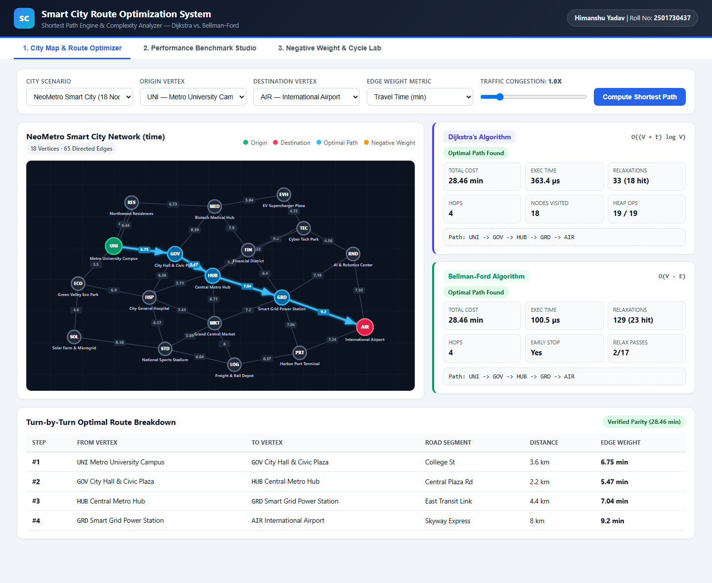
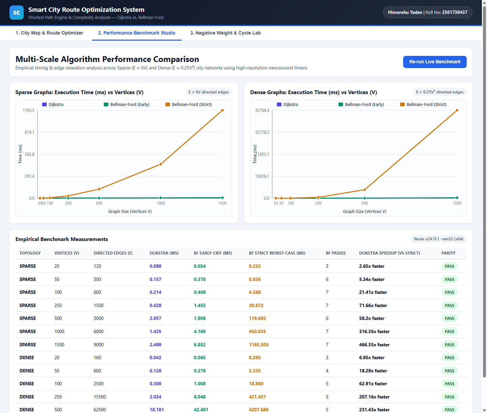
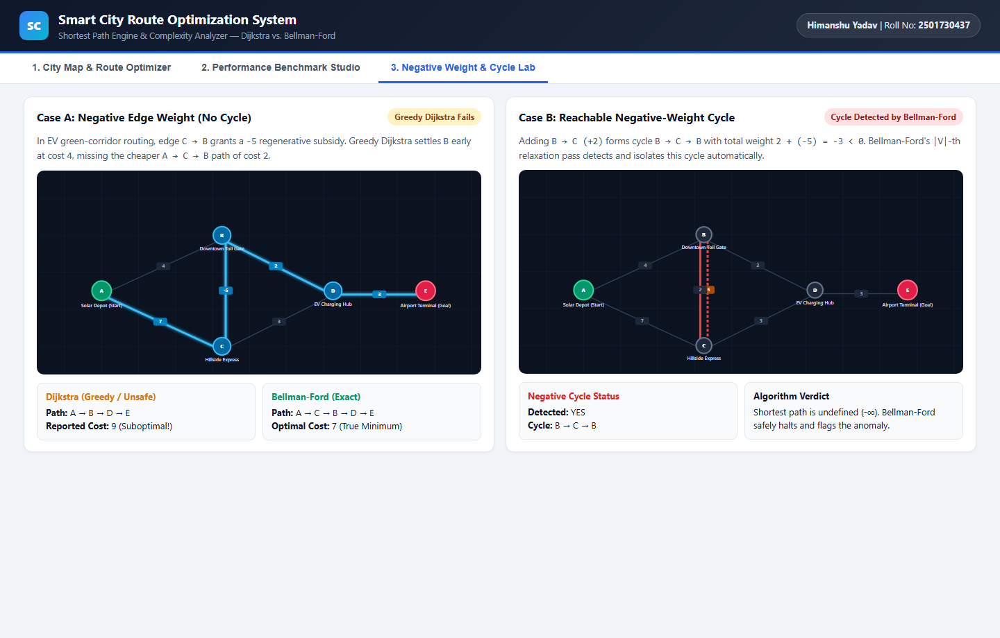
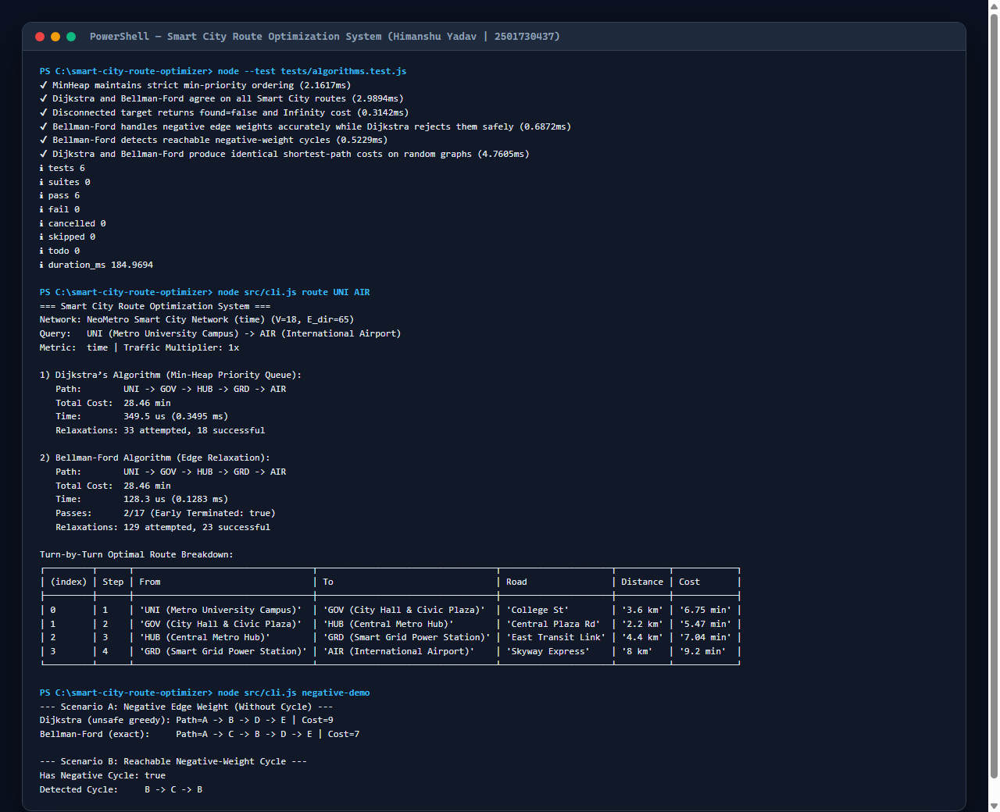

Graph-Based Urban Navigation Engine Implementing and Benchmarking Dijkstra’s and Bellman-Ford Shortest Path Algorithms
Develop a route optimization system that finds the shortest and most efficient route between different locations in a city. The system represents locations as vertices and roads as weighted edges, implements Dijkstra’s and Bellman-Ford algorithms to calculate shortest paths, and compares their performance across varying graph sizes.
Efficient urban routing is a foundational requirement for modern Smart City mobility, emergency dispatch, logistics, and electric-vehicle (EV) energy management. In this capstone project, the Smart City Route Optimization System models a realistic urban road network (NeoMetro Smart City) as a weighted directed graph G = (V, E), where intersections and landmarks are represented as vertices and road corridors are represented as weighted edges.
Two canonical single-source shortest-path algorithms—Dijkstra’s Algorithm backed by a custom Binary Min-Heap priority queue and the Bellman-Ford Algorithm with optional early termination and negative-weight cycle detection—are implemented from scratch without external graph libraries. The system provides an interactive web dashboard, a command-line interface (CLI), automated unit verification tests, and a reproducible multi-scale benchmarking suite covering sparse (E ≈ 6V) and dense (E ≈ 0.25V2) networks from V = 20 up to V = 1500 vertices. Experimental benchmarks confirm that Dijkstra achieves up to a 466.35× speedup on sparse graphs (V = 1500) and 910.7× speedup on dense graphs (V = 1000) over strict O(V·E) Bellman-Ford, while Bellman-Ford uniquely handles negative edge credits and detects negative-weight cycles.
Urban transportation networks involve thousands of intersections connected by heterogeneous roads with varying lengths, speed limits, one-way restrictions, and real-time congestion. Selecting the optimal path between an origin and a destination requires choosing both an accurate graph abstraction and an algorithm suited to the network’s weight properties and scale.
The project is structured into modular ES modules inside smart-city-route-optimizer/ with zero third-party runtime dependencies:
| Module / File | Responsibility |
|---|---|
src/models/graph.js |
CityGraph class maintaining vertex metadata, adjacency lists (for Dijkstra), directed edge lists (for Bellman-Ford), and dynamic traffic/metric cloning. |
src/algorithms/minHeap.js |
Custom Binary Min-Heap priority queue supporting O(log V) push and pop with operation counters. |
src/algorithms/dijkstra.js |
runDijkstra() implementation with non-negative weight validation, lazy priority-queue skipping, and path reconstruction. |
src/algorithms/bellmanFord.js |
runBellmanFord() with |V| − 1 relaxation passes, early-termination flag, |V|-th pass negative-cycle detection, and cycle extraction. |
src/data/smartCityMap.js |
18-vertex / 34-road NeoMetro city map, EV negative-weight demo, negative-cycle demo, and seeded deterministic random graph generator. |
src/benchmark/benchmark.js |
High-resolution (process.hrtime.bigint()) multi-trial benchmark runner exporting JSON and CSV results. |
src/cli.js & server.js |
CLI utility and local HTTP server powering the interactive HTML5/SVG dashboard in public/. |
tests/algorithms.test.js |
Automated verification suite using node:test and node:assert/strict. |
In src/data/smartCityMap.js, the NeoMetro network contains 18 vertices (such as UNI, GOV, HUB, GRD, AIR, HSP, TEC)
connected by 34 roads (31 bidirectional and 3 one-way priority corridors, yielding 65 directed edges). Dynamic travel-time edge weights incorporate congestion multipliers:
speed = max(10, speedKmh / (1 + (congestion - 1) * trafficMultiplier)), and weight = (distanceKm / speed) * 60 minutes.
Dijkstra’s algorithm solves the single-source shortest path problem on graphs with non-negative edge weights (w(u, v) ≥ 0).
It maintains a tentative distance map dist[v] initialized to ∞ (and dist[source] = 0) and greedily extracts the unsettled vertex u with the smallest tentative distance from a Binary Min-Heap.
Once u is popped and marked visited, its shortest distance is final, and all outgoing edges (u, v) are relaxed.
DIJKSTRA(G, source, target):
for each vertex v in G.V: dist[v] = INF; prev[v] = NULL
dist[source] = 0
pq = MinHeap(); pq.push((source, 0))
while not pq.isEmpty():
(u, d) = pq.pop()
if u in visited: continue
visited.add(u)
if u == target: break
for each edge (u, v, w) in G.adj[u]:
if v in visited: continue
if d + w < dist[v]:
dist[v] = d + w; prev[v] = u
pq.push((v, dist[v]))
Complexity: With an adjacency list and Binary Min-Heap, each vertex is settled once and each edge causes at most one heap insertion, giving Time Complexity: O((V + E) log V) and Space Complexity: O(V + E).
Unlike Dijkstra’s greedy strategy, Bellman-Ford uses dynamic programming over path length. Because any simple shortest path in a graph of |V| vertices contains at most |V| − 1 edges, relaxing all |E| directed edges across |V| − 1 iterations guarantees convergence to optimal shortest paths even when negative edge weights exist. An optional early-termination check stops as soon as a full pass produces zero distance improvements. Finally, a |V|-th pass checks if any edge can still be relaxed; if so, a reachable negative-weight cycle exists.
BELLMAN-FORD(G, source, earlyTerminate):
for each vertex v in G.V: dist[v] = INF; prev[v] = NULL
dist[source] = 0
for pass = 1 to |V| - 1:
updated = false
for each directed edge (u, v, w) in G.E:
if dist[u] != INF and dist[u] + w < dist[v]:
dist[v] = dist[u] + w; prev[v] = u; updated = true
if earlyTerminate and not updated: break
if not earlyTerminate or updated:
for each directed edge (u, v, w) in G.E:
if dist[u] != INF and dist[u] + w < dist[v]:
return NEGATIVE_CYCLE_DETECTED
Complexity: Strict worst-case Time Complexity is O(V · E) (which approaches O(V3) on dense graphs where E = Θ(V2)). With early termination on well-behaved positive-weight graphs, execution finishes in O(k · E) where k is the maximum hop depth (k ≪ V). Space Complexity is O(V + E).
| Criterion | Dijkstra’s Algorithm (Min-Heap) | Bellman-Ford Algorithm |
|---|---|---|
| Algorithmic Paradigm | Greedy (Best-First with Min-Heap) | Dynamic Programming (Iterative Edge Relaxation) |
| Worst-Case Time Complexity | O((V + E) log V) |
O(V · E) (up to O(V³) for dense graphs) |
| Space Complexity | O(V + E) |
O(V + E) |
| Negative Edge Weights | Not supported (violates greedy invariant) | Fully supported (exact shortest path) |
| Negative Cycle Detection | No | Yes (via |V|-th relaxation pass + cycle extraction) |
| Ideal Smart City Use Case | Large-scale road navigation (time/distance ≥ 0) | EV green-credit/subsidy routing & anomaly detection |
Benchmarks were executed on Node.js v24.11.1 (Windows x64) after a 5-iteration V8 JIT warm-up using deterministic seeded graphs
(generateRandomCityGraph) across both Sparse (Edir = 6V) and Dense (Edir ≈ 0.25V2) topologies.
Every measurement averages 3 trials (and verifies 100% shortest-path cost parity between Dijkstra and Bellman-Ford).
| Topology | Vertices (V) | Directed Edges (E) | Dijkstra (ms) | BF Early-Exit (ms) | BF Strict O(VE) (ms) | BF Passes | Speedup (vs Strict) | Parity |
|---|---|---|---|---|---|---|---|---|
| Sparse | 20 | 120 | 0.0879 | 0.0541 | 0.2326 | 3 | 2.65× | PASS |
| Sparse | 50 | 300 | 0.1565 | 0.3703 | 0.8360 | 6 | 5.34× | PASS |
| Sparse | 100 | 600 | 0.2143 | 0.4090 | 4.5880 | 7 | 21.41× | PASS |
| Sparse | 250 | 1,500 | 0.4280 | 1.4547 | 30.6721 | 7 | 71.66× | PASS |
| Sparse | 500 | 3,000 | 2.0565 | 1.9083 | 119.6922 | 6 | 58.20× | PASS |
| Sparse | 1,000 | 6,000 | 1.4251 | 4.1686 | 450.8349 | 7 | 316.35× | PASS |
| Sparse | 1,500 | 9,000 | 2.4992 | 6.8522 | 1,165.5031 | 7 | 466.35× | PASS |
| Dense | 20 | 160 | 0.0421 | 0.0647 | 0.2928 | 3 | 6.95× | PASS |
| Dense | 50 | 600 | 0.1277 | 0.2777 | 2.3350 | 4 | 18.29× | PASS |
| Dense | 100 | 2,500 | 0.2998 | 1.0085 | 18.8597 | 5 | 62.91× | PASS |
| Dense | 250 | 15,500 | 2.0345 | 8.0479 | 421.4572 | 5 | 207.16× | PASS |
| Dense | 500 | 62,500 | 18.1811 | 42.4015 | 4,207.6865 | 5 | 231.43× | PASS |
| Dense | 1,000 | 250,000 | 47.9899 | 215.5786 | 43,704.2837 | 5 | 910.70× | PASS |
Six automated test cases in tests/algorithms.test.js verify correctness across edge cases:
(1) Binary Min-Heap ordering invariant, (2) Route cost parity across NeoMetro city pairs, (3) Disconnected destination handling (found = false, cost ∞),
(4) Negative edge weights where safe Dijkstra rejects the graph and Bellman-Ford yields the exact optimal path A → C → B → D → E (cost 7 vs. unsafe greedy Dijkstra’s 9),
(5) Reachable negative-weight cycle detection (B → C → B), and (6) Random-graph distance-vector parity across sizes V ∈ {15, 40, 80}. All 6/6 tests pass.




The Smart City Route Optimization System successfully models urban road infrastructure as a weighted graph and provides an end-to-end empirical comparison between Dijkstra’s and Bellman-Ford algorithms. For standard non-negative urban navigation (travel time and physical distance), Dijkstra’s algorithm with a Binary Min-Heap is decisively superior, scaling smoothly to thousands of intersections in milliseconds. Conversely, Bellman-Ford remains indispensable whenever road networks include negative cost adjustments (EV regenerative corridors, toll rebates, or emission credits) or require negative-cycle anomaly detection.
Future Enhancements: Incorporating A* heuristic search using Euclidean vertex coordinates (x, y), Contraction Hierarchies for continental-scale sub-millisecond queries, and real-time WebSocket ingestion of live IoT traffic sensor feeds.